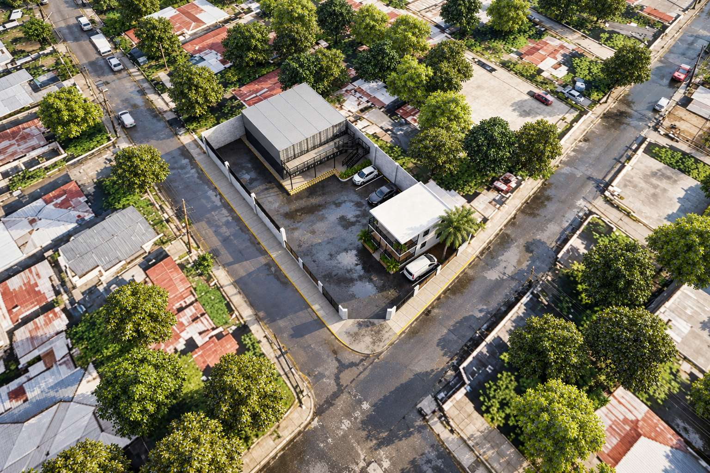
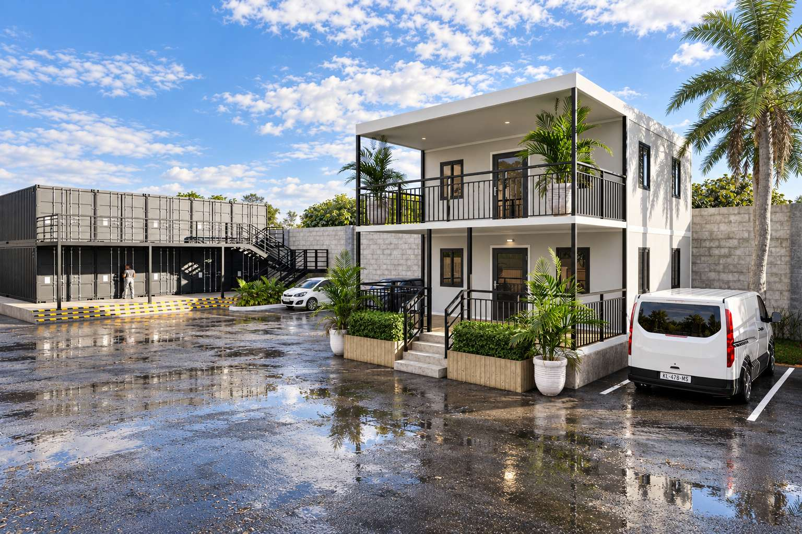
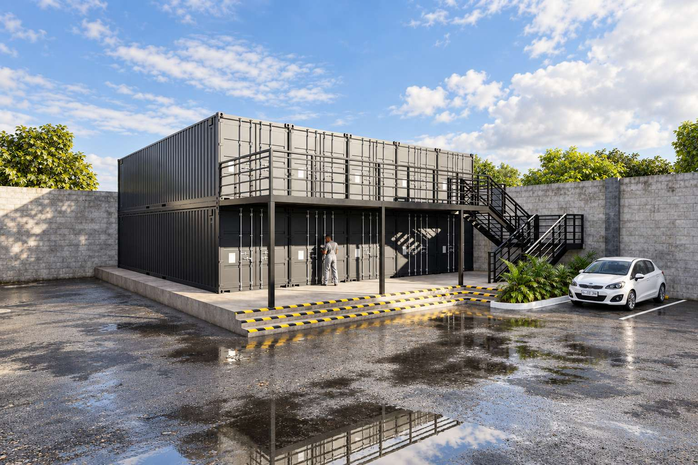
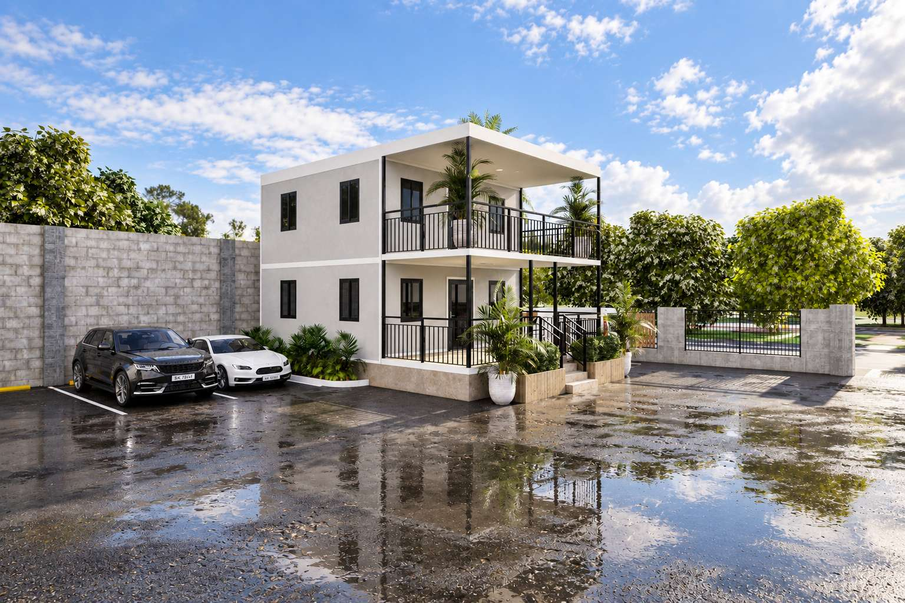
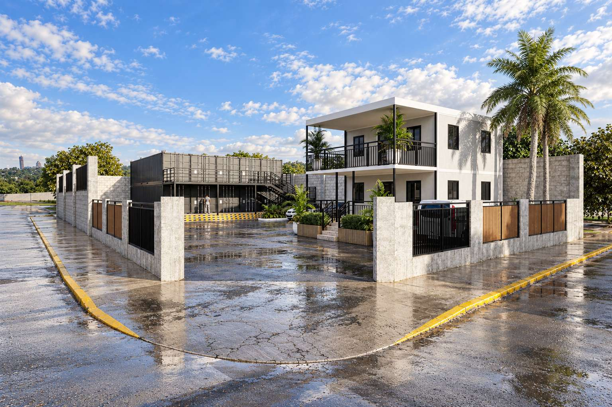
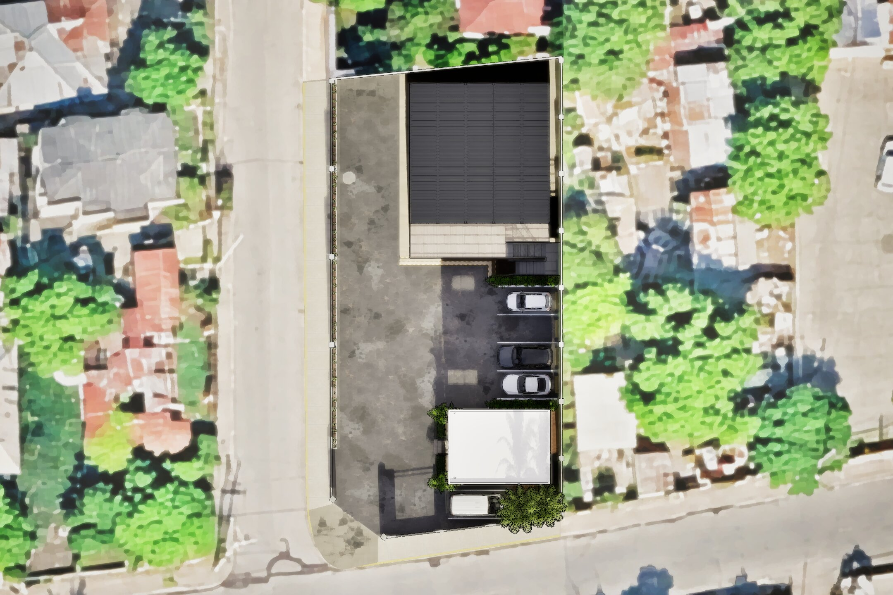
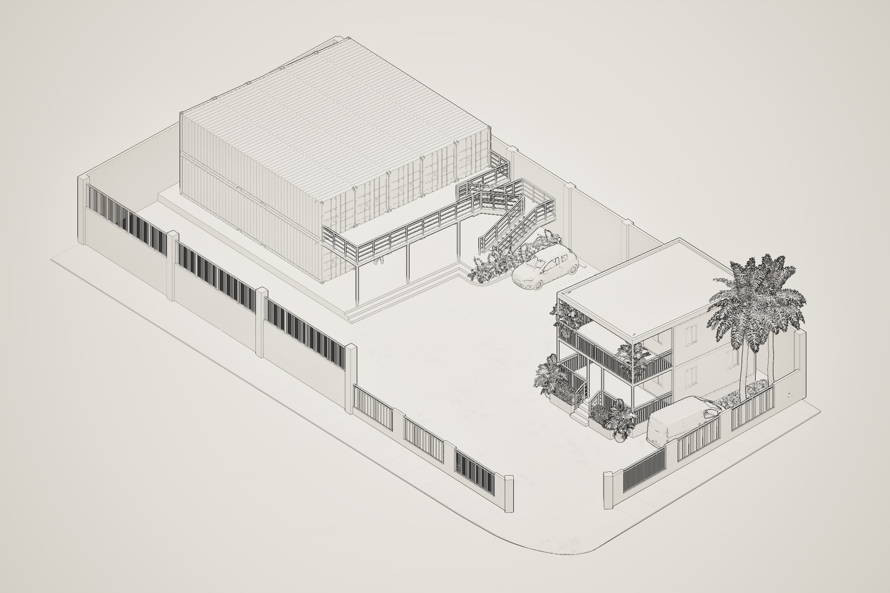

Industrial / site development
74 ChisholmsAvenue.
Concept design and visualization for the redevelopment of a corner property into a secure, functional warehouse yard with stacked container storage, a prefab office, parking and truck loading circulation.
A working yard first.
The layout is organized around truck access, loading operations and clear separation between heavy-vehicle movement and day-to-day office use.
Ten 40-ft containers arranged five across and two high, with a dedicated loading platform and stair access.
A two-storey office positioned toward the front of the property, with a footprint shown at approximately 29 ft × 21 ft 3 in on the current dimensional plan, plus adjacent parking and restrained landscaping.
The central asphalt yard remains open so a trailer truck can reverse in from Wigton Ave and back toward the container loading area.
Five designated parking spaces are provided. When the yard is not being used for active loading or offloading, the open lot can also accommodate additional vehicles.
Two additional parking spaces may also be accommodated along the left side of the storage containers, subject to maintaining the required truck access and loading clearances.
Key site specifications.
Current dimensional reference
Dimensions shown reflect the current concept model and are intended to communicate the proposed site arrangement, access and perimeter treatment.
Clear gate width at the primary vehicular entrance.
Masonry wall height, with 5 ft grille work between columns. Columns extend to 14 ft.
Reduced wall height approaching the main entrance.
Full-height dividing walls along the adjoining property boundaries.
Wall thickness with 18 in × 18 in structural columns.
Approximate spacing between perimeter wall columns.
Overall footprint of the stacked container storage bank shown on the current plan.
Current modeled office footprint as shown on the dimensional site drawing.
See the site in motion.
Project walkthrough
A video walkthrough of the proposed warehouse yard, showing the office, container loading area, parking and the open truck manoeuvring space.
Project views.
Select any view to open it full screen.





Technical views.
Dimensioned references for the overall site, storage/loading area and supporting design development.


